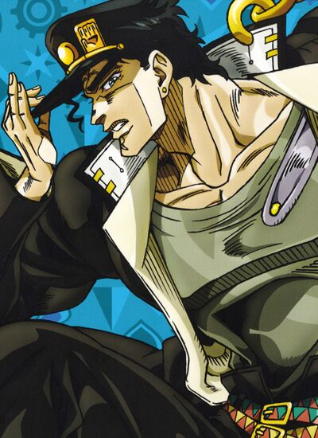

Jojo-Stardust Crusaders

| Início JOJO parte 1 JOJO parte 2 JOJO parte 3 JOJO parte 4 JOJO parte 5 JOJO parte 6 JOJO parte 7 JOJO parte 8 |


Jotaro Kujo (空 条 承太郎 Kujō Jotaro) É o protagonista de Stardust Crusaders, a Parte 3 do anime e tem aparições nas Partes 4-6. Jotaro é o terceiro Jojo e é o mais famoso da série.
Jotaro é o personagem principal de Stardust Crusaders, aparece em destaque em Diamond is Unbreakable, numa pequena cena em Vento Aureo e novamente em um papel fundamental em Stone Ocean.
Sério, estoico e inteligente, Jotaro possui grande poder e estabilidade aos seus aliados.
A terceira parte segue a história de Jotaro Kujo, o neto de Joseph Joestar. Jotaro é um aluno problema que vive entrando em brigas na escola e antagonizando seus professores.
Ele é colocado na prisão após brigar com três homens armados e um lutador de boxe, mas se recusa a sair dizendo que está possuído por um espírito malígno. Para demonstrar, ele pega uma arma e atira contra si mesmo na cabeça, mas a bala é parada. Joseph Joestar logo chega com seu amigo Mohammed Avdol. Uma batalha entre Avdol e Jotaro mostra o espírito malígno de Avdol, levando Jotaro para fora da cela. Joseph revela que o “espírito malígno” de Jotaro, na verdade é um Stand, uma manifestação psiquica de poder.